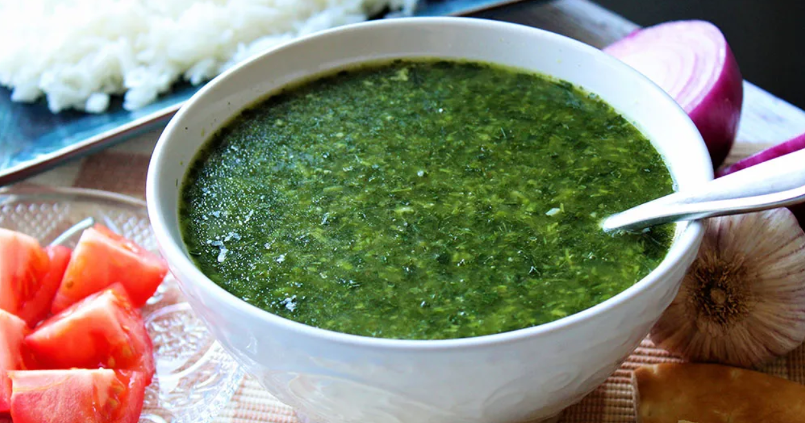

My favorite food to eat in Egypt
Koshari
The national dish of Egypt, Koshari is a vegetarian dish that features rice, lentils, macaroni pasta, garbanzo beans, and crispy fried onions all tied together with a spicy tomato sauce. It’s Egyptian street food at its best and this authentic koshari recipe is one you’ll make again and again!
Molokhia
Molokhia is eaten across Africa and the Middle East, but its roots trace back to ancient Egypt, where it's still a beloved staple. In the Egyptian version, the leaves are stripped from the stems, minced finely, and simmered with garlic, ground coriander, and chicken stock.
